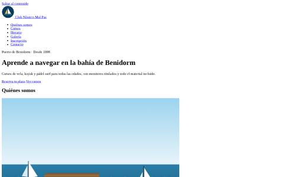
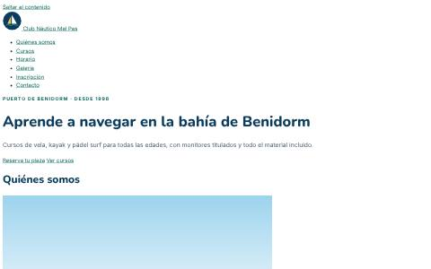
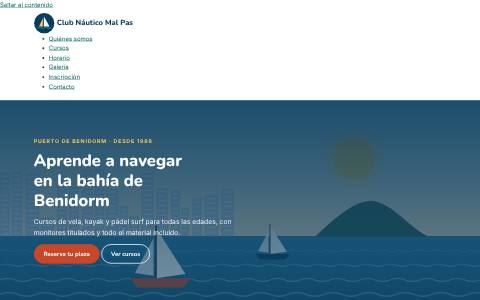
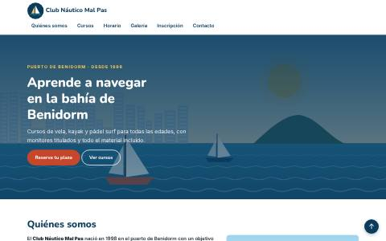
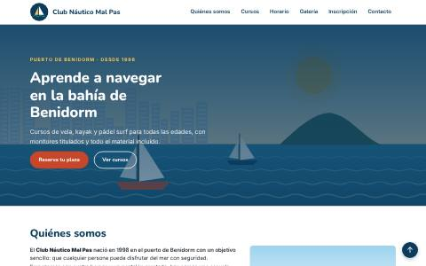

Cómo funciona
- Todo el alumnado parte de la misma web base (ZIP): una página completa, válida y semántica, con las clases ya puestas y sin ningún estilo.
- El HTML no se toca en toda la serie (solo se enlazan la hoja y la fuente en la PP 3.1). Todo sale de
css/estilos.css, que crece práctica a práctica: es la mejor demostración de las ventajas de las hojas de estilo (CE 2g). - Algunas soluciones son provisionales a propósito (por ejemplo, tarjetas con
inline-blocken la PP 3.2) y se sustituyen después por Flexbox y Grid, para que se vea qué problema resuelve cada técnica. - Cada enunciado trae capturas del resultado esperado en escritorio y en móvil, enlaces al laboratorio CSS para probar las propiedades antes de escribirlas y una lista de comprobación.
Las prácticas
| Práctica | Teoría | Duración |
|---|---|---|
| PP 3.1 · Hoja externa, selectores, color y tipografía | Secciones 1 – 5 (diapositivas 5 – 39) | 2 sesiones |
| PP 3.2 · Modelo de cajas, fondos, bordes y sombras | Sección 6 (diapositivas 40 – 50) | 2 sesiones |
| PP 3.3 · Listas, menú, posicionamiento, float y overflow | Sección 7 (diapositivas 51 – 57) | 2 sesiones |
| PP 3.4 · Maquetación con Flexbox | Sección 8 (diapositivas 58 – 64) | 2 sesiones |
| PP 3.5 · Maquetación con CSS Grid | Sección 9 (diapositivas 65 – 73) | 2 sesiones |
| PP 3.6 · Diseño adaptable, transiciones y validación | Secciones 10 y 11 (diapositivas 74 – 87) | 3 sesiones |
La evolución del diseño





Prácticas formativas: sirven de entrenamiento guiado para las prácticas calificables de la UP3 (PR 3.1 – 3.5) y el Proyecto 3, como refuerzo para quien necesita más pasos o como trabajo en casa. Si alguien se queda atrás, puede continuar desde la hoja de la práctica anterior que facilita el profesor.